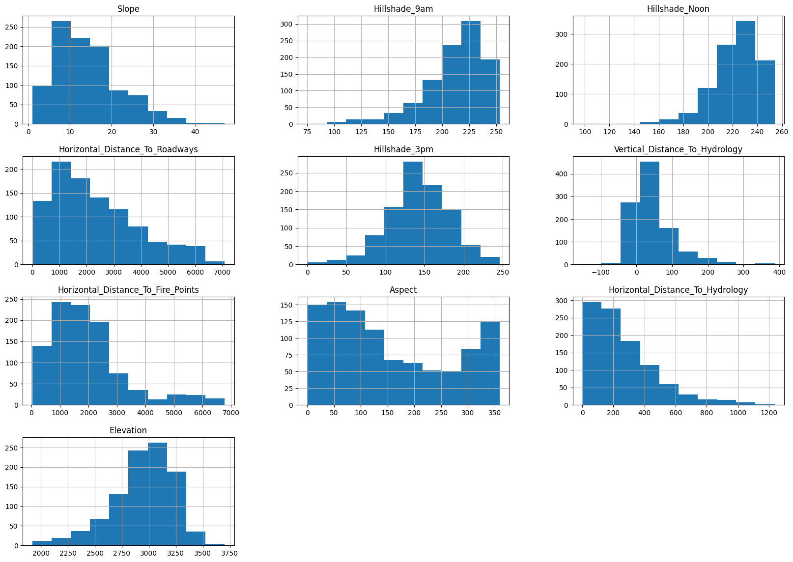
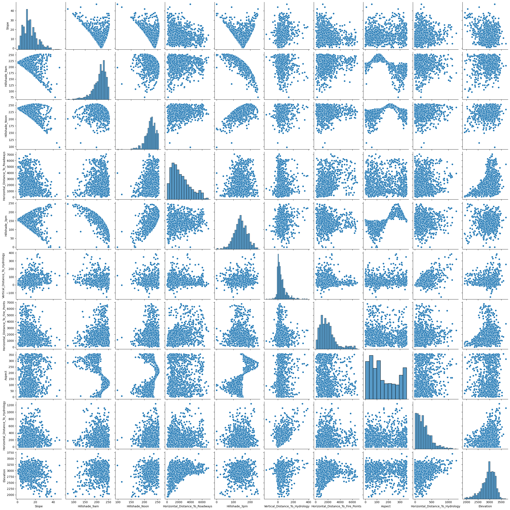
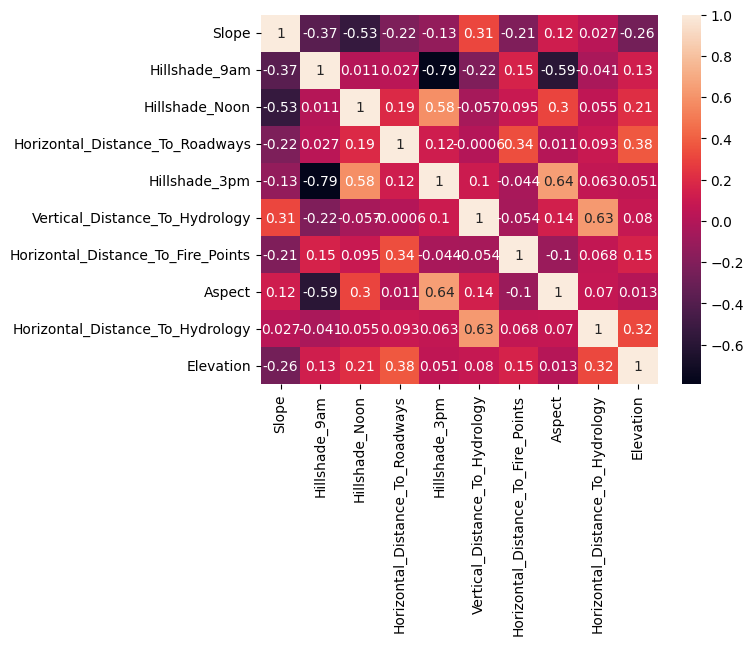
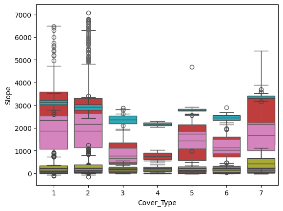
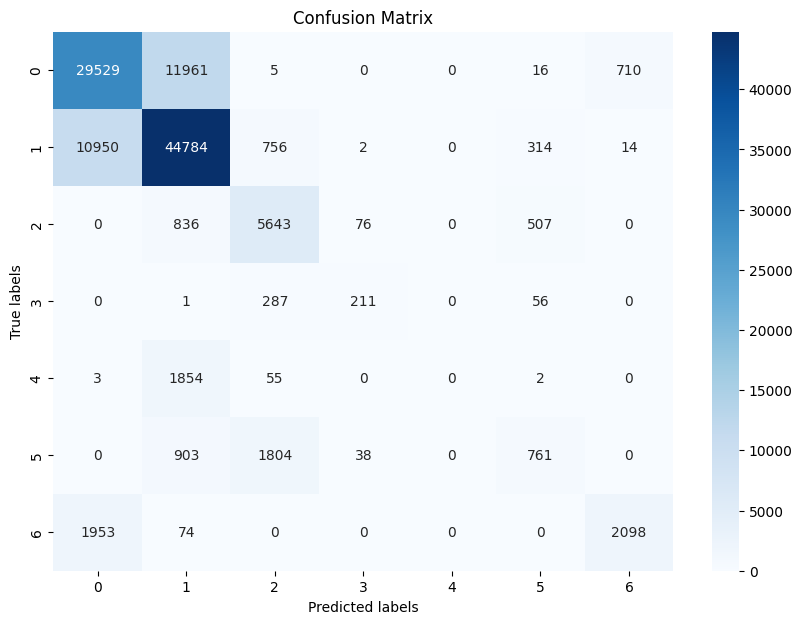
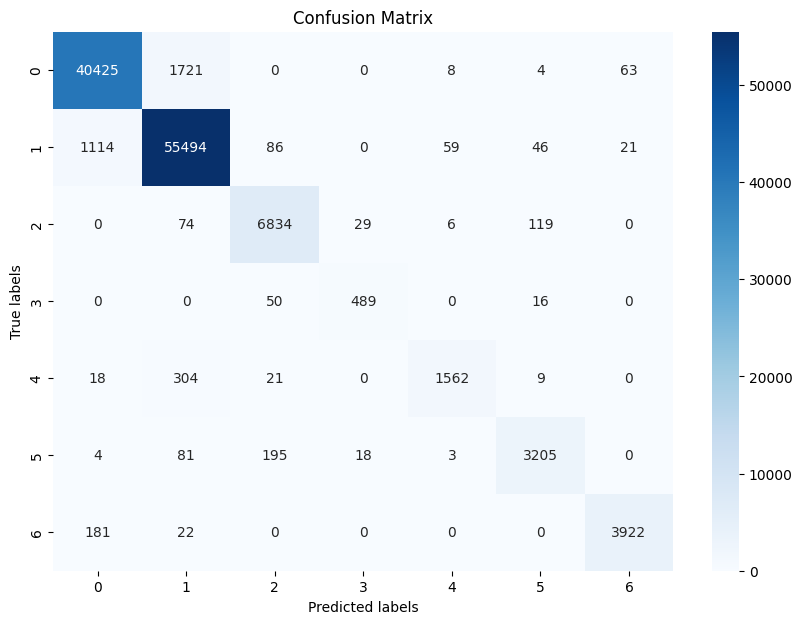
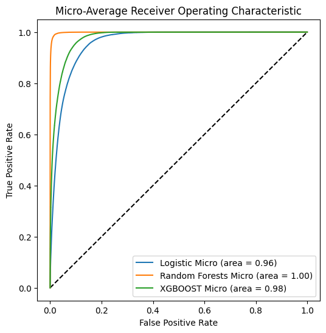

We can notice that the data is labelised so the model that can be applied in the data is classification
import pandas as pdimport chardetimport warningsimport pandas as pdimport matplotlib.pyplot as pltimport seaborn as snsimport numpy as npwarnings.filterwarnings("ignore")withopen('Dataset1.csv', 'rb') as f: result = chardet.detect(f.read()) # or readline if the file is large#print(result['encoding'])Dataset1 = pd.read_csv('Dataset1.csv', delimiter=",",decimal =".",encoding=result['encoding'])Dataset1.head()
Vegetation_Type_2
Groundwater_Level_1
Drainage_Quality_1
Slope
Hillshade_9am
Hillshade_Noon
Pollution_Level_1
Water_Source_Distance_2
Terrain_Roughness_2
Urban_Proximity_Index_1
...
Soil_Moisture_Level_2
Horizontal_Distance_To_Hydrology
Wind_Speed_Average_2
Elevation_Range_1
Pollution_Level_2
Vegetation_Type_1
Temperature_Average_1
Canopy_Cover_2
Elevation
Cover_Type
0
450.684968
2054.426315
229.994980
3
221
232
181.000000
227.161401
216.000000
14.0
...
418.375833
258
116.000000
219.000000
224.000000
0.000000
9.000000
503.586301
2596
5
1
889.885392
997.573983
208.000000
2
220
235
166.000000
933.851870
251.000000
16.0
...
2488.726342
212
179.025367
236.000000
224.000000
69.000000
17.000000
537.000000
2590
5
2
1232.738700
676.352745
214.313227
9
234
238
205.000000
4235.282432
176.898683
13.0
...
1852.423116
268
156.000000
200.872578
230.415218
120.357544
10.000000
376.000000
2804
2
3
3359.512595
4720.481538
230.000000
18
238
238
176.002696
1066.935784
220.000000
11.0
...
5388.528248
242
156.000000
230.000000
243.000000
15.000000
12.933234
30.000000
2785
2
4
1907.275049
2187.627994
221.000000
2
220
234
109.000000
1182.489702
184.859965
9.0
...
304.080537
153
112.000000
232.000000
213.000000
39.000000
14.000000
330.000000
2595
5
5 rows × 51 columns
from sklearn.model_selection import train_test_split # split data into training and testing setsX = Dataset1.drop(['Cover_Type'], axis=1).copy()Y = Dataset1['Cover_Type'].copy()
sample_size =1000# Adjust this based on your dataset sizeX_sampled = X.sample(n=sample_size, random_state=42)Y_sampled = Y.loc[X_sampled.index]
X_sampled.describe()
Slope
Hillshade_9am
Hillshade_Noon
Horizontal_Distance_To_Roadways
Hillshade_3pm
Vertical_Distance_To_Hydrology
Horizontal_Distance_To_Fire_Points
Aspect
Horizontal_Distance_To_Hydrology
Elevation
count
1000.000000
1000.00000
1000.000000
1000.000000
1000.000000
1000.000000
1000.000000
1000.000000
1000.000000
1000.000000
mean
14.239000
211.96100
222.901000
2337.541000
142.274000
45.694000
1955.295000
155.262000
265.347000
2943.082000
std
7.613004
28.15678
19.640951
1562.373354
39.159244
58.644604
1325.619385
112.038618
215.242347
284.695287
min
1.000000
75.00000
98.000000
0.000000
0.000000
-152.000000
30.000000
0.000000
0.000000
1920.000000
25%
9.000000
198.00000
213.000000
1082.000000
119.000000
7.000000
1019.750000
58.750000
104.750000
2791.750000
50%
13.000000
218.00000
225.000000
1969.000000
142.000000
29.000000
1698.000000
123.000000
214.000000
2980.500000
75%
18.000000
232.00000
236.000000
3266.250000
168.250000
66.000000
2473.250000
260.000000
365.000000
3146.000000
max
47.000000
253.00000
254.000000
7078.000000
246.000000
387.000000
6769.000000
359.000000
1237.000000
3702.000000
_ = X_sampled.hist(figsize=(20, 14))

sns.pairplot(X_sampled)

# Correlation matriximport seaborn as snscorr_matrix = X_sampled.corr()# Heatmap of the correlation matrix_= sns.heatmap(corr_matrix, annot=True)

The graphic show that it seems don’t exist a
# box plotfor col in X_sampled.columns: sns.boxplot(x=Y_sampled, y=X_sampled[col])

Boxplot is a good tool to visualise a effect of the numerical variable in the categorical target
withopen('Dataset2.csv', 'rb') as f: result = chardet.detect(f.read()) # or readline if the file is large#print(result['encoding'])Dataset2 = pd.read_csv('Dataset2.csv', delimiter=",",decimal =".",encoding=result['encoding'])Dataset2.head()
Wilderness_Area is categorical variables and Soil_Type is numerical variable.
# Concatenate the datacombined_X = pd.concat([X, Dataset2], axis=1)combined_X.head()
Slope
Hillshade_9am
Hillshade_Noon
Horizontal_Distance_To_Roadways
Hillshade_3pm
Vertical_Distance_To_Hydrology
Horizontal_Distance_To_Fire_Points
Aspect
Horizontal_Distance_To_Hydrology
Elevation
Wilderness_Area
Soil_Type
0
3
221
232
510
148
0
6279
51
258
2596
1
29
1
2
220
235
390
151
-6
6225
56
212
2590
1
29
2
9
234
238
3180
135
65
6121
139
268
2804
1
12
3
18
238
238
3090
122
118
6211
155
242
2785
1
30
4
2
220
234
391
150
-1
6172
45
153
2595
1
29
from sklearn.model_selection import train_test_split # split data into training and testing setsX_train, X_test, Y_train, Y_test = train_test_split(combined_X, Y,test_size=0.2, random_state=12345)X_train.shapeX_test.shapeprint(X_train.shape,X_test.shape)
(464809, 12) (116203, 12)
Before training the model we should standardised numerical features and threat missings values and perhaps encode categorical features
The elastic net penalty is a regularization technique used in machine learnings to prevent overfitting. It combines properties of both L1 (Lasso) and L2 (Ridge) regularizatio andbines both L1 and L2 regularization penalt \[ies:
E_ast_c Net Pena\alpha ty _ α*L1 Penalty\alpha+ (1_α)*L2 P\]enalty
from sklearn.metrics import confusion_matrix# Confusion matrix# Compute the confusion matrixconf_matrix = confusion_matrix(Y_test, prediction)# Display the confusion matrix using Seaborn's heatmapplt.figure(figsize=(10, 7))sns.heatmap(conf_matrix, annot=True, fmt='g', cmap='Blues')plt.title('Confusion Matrix')plt.xlabel('Predicted labels')plt.ylabel('True labels')plt.show()

Diagonal Values: The numbers along the diagonal of the matrix represent correct predictions for each class. The model has correctly predicted:- Example :
Class 129 52953 time s Class 24 784492 tim es Class5643173 ti mes Clas2114: 95
Off-Diagonal Values: These numbers indicate the instances where the model has made incorrect predictions. For
example: 1095041 instances of Class 1 were misclassified as Class 2 836401 instances of Class 1 were misclassified as Class 287 527 instances of Class 3 were misclassified as Class 2, and so on.times
Some classes like Class 0 and Class 1 have a high number of correct predictions(29529,44 784 ), suggesting the model performs well on these classes. Other classes, such as Class 3 and Class 4, have very few correct predictions, which may indicate that the model struggles with these classes, or they are underrepresented in the training data. There seems to be a considerable number of instances where Class 0 is misclassified as Class 1 and vice versa, indicating possible class confusion or similarity in feature patterns for these classes.
while the model is quite accurate for certain classes: mes), it performs poorly on ot()hers. This could be due to various factors, including class imbalance, lack of distinguishable features, or insufficient model complexity to capture the nuances between classes.
Part 3
OOB error is an internal validation measure for random forests, calculated by aggregating prediction performance on the data not used during training of each constituent tree. It serves as an estimate of generalization capability without external validation.
## Training Random Forestfrom sklearn.ensemble import RandomForestClassifierfrom sklearn.metrics import accuracy_score, confusion_matriximport seaborn as snsimport matplotlib.pyplot as pltdepths = [10, 20, 30]oob_errors = []models = []best_oob_error =float('inf')best_model =Nonei =0for depth in depths:print(i) model = RandomForestClassifier(max_depth=depth, oob_score=True, random_state=42, n_estimators=100, warm_start=True# This allows us to add more estimators later if needed ) model.fit(X_train, Y_train) oob_error =1- model.oob_score_ oob_errors.append(oob_error) models.append(model)if oob_error < best_oob_error: best_oob_error = oob_error best_model = model i = i+1print("Done")# Print OOB errors for each modelfor depth, error inzip(depths, oob_errors):print(f"Depth: {depth}, OOB Error: {error}")
# Compute the accuracy of the best random forest modelpredictions = best_model.predict(X_test)accuracy = accuracy_score(Y_test, predictions)print("Accuracy of the Best Random Forest: {:.3f}".format(accuracy))# Display the confusion matrixconf_matrix = confusion_matrix(Y_test, predictions)plt.figure(figsize=(10, 7))sns.heatmap(conf_matrix, annot=True, fmt='g', cmap='Blues')plt.title('Confusion Matrix')plt.xlabel('Predicted labels')plt.ylabel('True labels')plt.show()
Accuracy of the Best Random Forest: 0.963

Diagonal Values: The numbers along the diagonal of the matrix represent correct predictions for each class. The model has correctly predicted:
Example : Class 1: 40 425 times Class 2: 55494 times Class 3: 68343 times Class 4: 486 times
Off-Diagonal Values: These numbers indicate the instances where the model has made incorrect predictions. For
example:
9,641 instances of Class 1 were misclassified as Class 2. 401 instances of Class 1 were misclassified as Class 4. 527 instances of Class 3 were misclassified as Class 2, and so on.
Compare to the last model the accuracy is more high(0.963 ) and the model do less bad prediction
error as we see in the confusion matrix(as we see in the diagonal.
Question 2
If we run the model it will crach because the xgboost package does not handle strings for labels unlike all the models trained previously, so you need to encode them first as integers (see sklearn.preprocessing LabelEncoder).
from sklearn.preprocessing import LabelEncoderimport xgboost as xgbfrom xgboost import XGBClassifier# encode string class values as integerslabel_encoder = LabelEncoder()label_encoder = label_encoder.fit(Y)label_encoded_y_train = label_encoder.transform(Y_train)clf_xgb = XGBClassifier(objective='multi:softprob', seed='12345', gamma=0, learning_rate=0.05, max_depth=5, n_estimators=200)clf_xgb.fit(X_train, label_encoded_y_train)accuracy_xgb = accuracy_score(label_encoder.transform(Y_test), clf_xgb.predict(X_test))print("Accuracy of XGBOOST :","%.3f"% accuracy_xgb)
Diagonal Values: The numbers along the diagonal of the matrix represent correct predictions for each class. The model has correctly predicted:
Example : Class 1: 32153 times Class 2: 47492 times Class 3: 6173 times Class 4: 95 times
Off-Diagonal Values: These numbers indicate the instances where the model has made incorrect predictions. For
example:
9641 instances of Class 1 were misclassified as Class 2. 401 instances of Class 1 were misclassified as Class 4. 527 instances of Class 3 were misclassified as Class 2, and so on.
This model is very good but do more error that a random forest but more accurate that logistic regression even do it is not accurate.
import numpy as npfrom sklearn.preprocessing import label_binarizefrom sklearn.metrics import roc_curve, aucdef compute_roc_auc(models, X, Y_test):""" Compute ROC AUC for a list of models. Args: models (dict): A dictionary of models with their names as keys. X_test (array-like): Test features. Y_test (array-like): True labels for the test set. Returns: dict: A dictionary containing FPR, TPR, and ROC AUC for each model. """ Y_classes = np.unique(Y_test) Y_test_binarized = label_binarize(Y_test, classes=Y_classes) n_classes =len(Y_classes) results = {}for model_name, model in models.items():if model_name =='Logistic': model = Pipeline(steps=[('preprocessor', preprocessor), ('logistic', clf_l1l2_LR)]) model.fit(X_train,Y_train) score = model.predict_proba(X_test)else: score = model.predict_proba(X_test) fpr =dict() tpr =dict() roc_auc =dict()# Compute ROC for each classfor i inrange(n_classes): fpr[i], tpr[i], _ = roc_curve(Y_test_binarized[:, i], score[:, i]) roc_auc[i] = auc(fpr[i], tpr[i])# Compute micro-average ROC curve and ROC area fpr["micro"], tpr["micro"], _ = roc_curve(Y_test_binarized.ravel(), score.ravel()) roc_auc["micro"] = auc(fpr["micro"], tpr["micro"]) results[model_name] = {'fpr': fpr, 'tpr': tpr, 'roc_auc': roc_auc, 'score':score}return resultsmodels = {'Logistic': clf_l1l2_LR,# Assurez-vous que clf_svm est entraîné sur des données mises à l'échelle si nécessaire'Random Forests': best_model,'XGBOOST': clf_xgb,}roc_results = compute_roc_auc(models, X_test, Y_test)
import matplotlib.pyplot as pltplt.figure(figsize=(6, 6))plt.plot([0, 1], [0, 1], 'k--') # Ligne diagonalefor model_name, metrics in roc_results.items(): plt.plot(metrics['fpr']['micro'], metrics['tpr']['micro'], label=f'{model_name} Micro (area = {metrics["roc_auc"]["micro"]:.2f})')plt.legend()plt.xlabel("False Positive Rate")plt.ylabel("True Positive Rate")plt.title('Micro-Average Receiver Operating Characteristic')plt.show()

As we can see in this graph the model which has the best abilities of prediction
is random Forest , follow by XGboost micro(behaps because we have not chosen the best hyperpameter for Xgboost)
from sklearn.metrics import roc_auc_score# Affichage des AUC micro-averagedprint("Area under Roc Curve (micro-average) for:\n")for model_name in models.keys():print(f"- {model_name}: {roc_results[model_name]['roc_auc']['micro']:.3f}")# Calcul et affichage des AUC one-vs-one macro-averagedprint("\nArea under Roc Curve (one-vs-one macro-average) for:\n")for model_name, model in models.items(): score = roc_results[model_name]['score'] auc_ovo_macro = roc_auc_score(Y_test, score, multi_class="ovo", average="macro")print(f"- {model_name}: {auc_ovo_macro:.3f}")
Area under Roc Curve (micro-average) for:
- Logistic: 0.958
- Random Forests: 0.999
- XGBOOST: 0.977
Area under Roc Curve (one-vs-one macro-average) for:
- Logistic: 0.918
- Random Forests: 0.998
- XGBOOST: 0.967